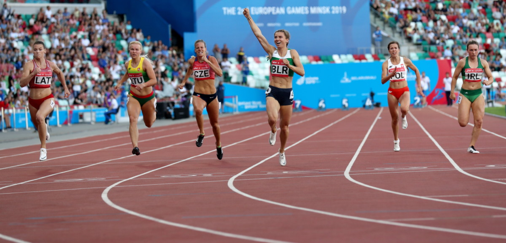
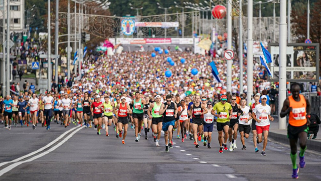

СПОРТИВНАЯ БЕЛАРУСЬ
Республика Беларусь занимает достойное место в мировой спортивной семье. Страна стабильно входит в двадцатку сильнейших держав мира, принимающих участие в Олимпийских играх.
Всестороннее развитие физической культуры и спорта - один из приоритетов социальной политики государства. В Беларуси обеспечены все необходимые условия для занятий спортом - как на профессиональном, так и любительском уровне. Ведется большая работа по созданию современной общедоступной спортивной инфраструктуры, приобщению молодого поколения к регулярным занятиям физической культурой и спортом, подготовке олимпийского резерва, улучшению условий тренировок атлетов мирового уровня. Во всех регионах работают тысячи спортивных сооружений, их число с каждым годом увеличивается. Проводится множество спортивных мероприятий, растет количество их участников.
Спортивные объекты
Герои спорта
Международные соревнования в Беларуси
В Беларуси функционируют более 23 тыс. физкультурно-спортивных сооружений. В каждом областном центре есть Дворец спорта, крытая ледовая площадка.
В Республике Беларусь культивируется более 130 видов спорта. У каждого из них есть поклонники, свои славные страницы истории и яркие имена.
Одним из наиболее динамично развивающихся направлений работы спортивной отрасли стало привлечение и организация проведения на территории Беларуси крупнейших международных спортивных соревнований.
Здоровый образ жизни - визитная карточка Беларуси
Организация физкультурно-оздоровительной и спортивно-массовой работы с населением постоянно находится в центре внимания Президента. Он показывает пример здорового образа жизни, искренней любви к спорту.
Ежегодно в Беларуси проводятся около 22 тыс. спортивно-массовых мероприятий. Традиционными стали состязания "Белорусская лыжня", международные Минский велокарнавал и Минский полумарафон. Возрождена система республиканских отраслевых спартакиад. В стране проводятся соревнования среди детей и подростков по футболу "Кожаный мяч", по гандболу - "Стремительный мяч", по биатлону - "Снежный снайпер", республиканский хоккейный турнир "Золотая шайба" на призы Президента Республики Беларусь.

Особое внимание уделяется совершенствованию физического воспитания детей и учащейся молодежи. По всей стране организуются подростковые спортивные клубы. Работают республиканские центры олимпийской подготовки, где тренируются лучшие атлеты страны. Налажена система подготовки спортивного резерва. В ней задействованы 465 организаций физической культуры и спорта, в том числе 11 средних школ - училищ олимпийского резерва и 454 специализированных учебно-спортивных учреждений. Подготовку здесь проходят около 160 тыс. юных спортсменов.